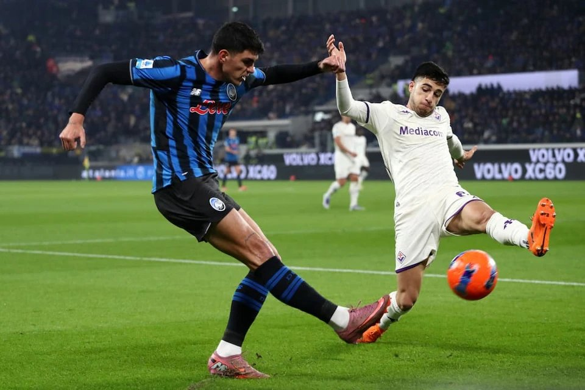

亚特兰大是带着一身伤进佛罗伦萨的。周中欧协联客场对阿贾克斯，他们下半场一度占据优势，却在最后8分钟连丢两球，0比2输掉比赛。联赛同样不顺：上轮主场4比4战平弗洛西诺内，N-克尔斯托维奇传射建功、埃德森点射，两轮不胜，客场已经四连败。埃德森赛后说，那样的表现至少应该拿到1分，我们本该踢得更聪明一些。
萨里的处境不轻松。他在赛后承认，距离比赛结束还有5分钟时完全想不到会输，也为球迷感到抱歉；他把话说透——球队有四名中卫缺席，现有球员更偏向进攻。伤病名单上挂着希恩、科苏努、贝拉诺瓦、科拉希纳茨、凯西、苏莱马纳、斯卡马卡、拉斯帕多里八个名字，客场四连败不是意外。萨里自己也清楚，只有取得好的结果才能走出困境。俱乐部暂时还站在他这边，但欧协联和联赛一起往下走，留给他的时间不会太多。

佛罗伦萨的问题写在进攻端。上轮主场1比2输给国米，希门尼斯先开纪录，补时阶段连失两球被逆转，联赛三连败、四轮不胜，四场球每场只进一个。重组的锋线没有达到预期，新援太多，磨合迟迟不到位。意甲第9轮大部分比赛已经踢完，国米和拉齐奥同积25分领跑，佛罗伦萨和亚特兰大这场是本轮剩下的两场之一。同一轮里尤文客场0比2输给热那亚，AC米兰主场2比4不敌博洛尼亚，中上游的座次正在松动。
交锋往绩两队势均力敌，近10次佛罗伦萨4胜2平4负。亚特兰大的火力还在，4比4那场球说明他们既能进球，也能丢球。数据层面，主队没有拿到足够支持：一支联赛三连败的球队，在自己主场遇上客场四连败的对手，走势给不出倾向，这本身就说明了问题。赛前的彩经也把票投给了客队：亚特兰大伤兵太多、客战能力又差，佛罗伦萨却没能拿到足够支持。
伤停方面，佛罗伦萨缺蓬格拉契奇、帕里西、拉涅利、阿塔，后防线同样拼不齐；亚特兰大伤兵集中在中前场，可用的进攻人手不多。主场气氛一向不差，但三连败之后，佛罗伦萨的信心比战术更让人担心。综合近况与主客表现，本场看好亚特兰大客场不败。
剩下这三场看法，关注下方名片
周五 001 澳超 布里斯班狮吼VS奥克兰FC
周五 004 法甲 勒阿弗尔VS巴黎圣曼
周五 007 德甲 埃沃斯堡VS美因茨
文章发布尚早，更多的可联系本文作者👆👆👆，别再做梦当什么“天选之子”了！你一个人能比得过一个团队深挖一场比赛。